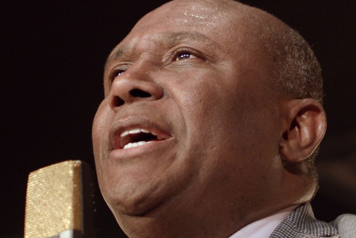

Irmão Lázaro
Antônio Lázaro Silva, conhecido como Irmão Lázaro (1966-2021), foi um cantor, compositor e político brasileiro filiado ao Partido Liberal (PL), eleito Deputado Federal pelo Estado da Bahia e membro da bancada evangélica.
Lázaro iniciou sua carreira músical aos seus 18 anos de idade, quando obteve seu primeiro violão; dedicando-se tempos depois ao baixo elétrico. Ingressou no grupo Olodum, ficando famoso pela canção "I Miss Her", com letra em inglês.
Após enfrentar problemas com drogas, Lázaro se converteu a religião evangélica, e desde então passou a compor músicas cristãs.
Foi diagnosticado com a Covid-19 no dia 15 de fevereiro; no hospital, foi constatado que o cantor estava com metade dos pulmões comprometidos. Após mais de um mês internado, no dia 19 de março de 2021, por volta das 18:00h, por meio do Twitter, sua assessoria informou sobre o estado frágil e delicado de Lázaro e pediu orações. Durante a noite, sua filha confirmou que ele havia vindo a óbito, por meio de uma publicação no Instagram. Na rede social a mesma escreveu "Hoje a pessoa mais importante da minha vida se foi, o homem que eu mais amei e continuarei amando o resto da vida."
Nascimento
Antônio Lázaro Silva nasceu no dia 4 de novembro de 1966, em Salvador - Bahia.
Algumas músicas
A fundo sobre Irmão Lázaro
Não poderia deixar de mostrar mais a fundo sobre quem era o Irmão Lázaro, afinal, como saberíamos exatamente como ele chegou a onde chegou? Como decidiu tornar-se cantor gospel? O que o fez mudar...
Em seu testemunho, Lázaro relata que era alguém que carecia de emoções fortes, gostava de experimentar coisas proibidas, sendo um dos principais motivos a levá-lo ao mundo das drogas. Além disso, Lázaro convivia com o problema familiar; cansado dos conflitos, o mesmo decidiu sair de casa, o que resultou em ainda mais conflitos entre seus pais, "O pai quando ama o filho não aceita, né? A mãe quando ama o filho não aceita ver o filho descendo pro abismo e simplesmente fingir que não se importa".
Depois de alguns anos, Lázaro começou a adquirir síndrome do pânico e conta que quando criança se lembra de ter sido atormentado por um terror noturno: "Eu fiquei nessa vida por volta de 30 anos, 25 anos mais ou menos, na vida me jogando de tudo quanto foi altura".
Ele descreve que era o ápice das coisas ruins, sentindo uma enorme necessidade de buscar ajuda, e que aliás, já havia tentado com as drogas, entrar em outras religiões, porém a situação apenas piorava, ele se sentia perdido, ele precisava de algo que lhe desse uma razão; "Se eu tentasse resolver os meus problemas e não tivesse uma razão para viver os problemas provavelmente voltariam". Foi aí que membros de uma igreja bateram na porta de sua casa, o antigo bar em que Lázaro frequentava havia se tornado uma igreja.
Após uma overdose, ele resolveu ir até a igreja, como uma forma de despedida; lá havia um crente que sempre lhe falava sobre o amor de Cristo, de como Ele lhe amava, Lázaro não entendia muito bem, porém suas palavras ficavam em sua mente, ele não entendia como poderia alguém que morreu a anos atrás ter morrido por ele. Certo dia, ele resolveu apenas acreditar, crer em um ser sobrenatural que o amava e amava a todos. Quando decidiu ir até a igreja, aquele foi o primeiro passo, sua vida mudou totalmente, "Não foi só fazer parte de uma igreja, não foi só fazer parte de uma religião, acreditar em Jesus implicava em deixar de acreditar em tudo, tudo em que eu acreditava; deixava de acreditar nas minhas fórmulas de felicidade, nas minhas maneiras de conseguir realizações interiores[...]". Então Irmão Lázaro criou o objetivo de levar alegria para as pessoas, mostrar que Jesus também poderia mudar a vida de quem o aceitasse, "A minha parte é só cantar, essa estrada quem constrói aí é Deus".
Nós escolhemos homenagear Antônio Lázaro Silva, ou Irmão Lázaro se preferir, talvez ele não fosse tão famoso quanto outros artistas, ou sua história não fosse tão conhecida, mas é por isso mesmo que decidimos que você a conhecesse. Um homem que caiu nas drogas, vícios e bebidas, porém que um dia decidiu por um fim nisso. Um homem que estava lá em baixo, mas que saiu por cima, pois procurou ajuda e achou a melhor ajuda possível, Deus.
É notável a transformação que o Senhor fez em sua vida, seu sorriso alegre, o brilho em seus olhos só confirmam o quanto ele tem a certeza de que fez a escolha certa. Lázaro não está mais conosco, entretanto, posso afirmar que Deus o recebeu de braços abertos. Lázaro me faz recordar de alguns versículos da bíblia, quando olho suas fotos e revejo seus vídeos consigo vê-lo os citando:
2 Timóteo 4:7,8
7. Combati o bom combate, acabei a carreira, guardei a fé.
8. Desde agora, a coroa da justiça me está guardada, a qual o Senhor, justo juiz, me dará naquele dia; e não somente a mim, mas também a todos os que amarem a sua vinda.
Descanse em paz irmão Lázaro ✟